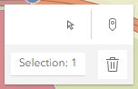

How to Use this Tool
You will mainly use the two buttons in the top, right corner.

The “Select Feature” button is active when the page loads. Use it to click on a parcel and see parcel details in a popup. Only eligible parcels are shown on the map.

To run a height analysis, click the “Draw a Point” button and then click the parcel of interest. To analyze another parcel, click this button again and place a point on a new parcel.

Using the search bar will place you at the selected address but you will still need to click the "Draw a Point" button and select an eligible parcel.
If you want to remove the blue dot where you created the initial point, press the "Delete Feature" button that opens in the top, right panel. It will remove the blue point but leave the selected parcel, buffer & zoning districts.